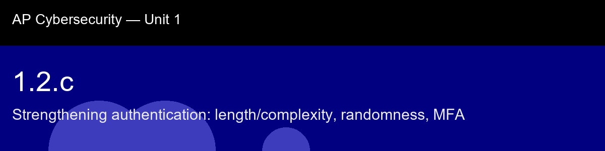

1.2.c recap, Strengthening authentication: length/complexity, randomness, MFA
Nice work today. Here's what to lock in:
- Recap handout:
post-lecture-handout.docx
- Simulation: SimLab
- Self-check quiz: due before next class
The big picture: The real lesson underneath the RFC 6238 mechanics is this: strong authentication isn't one strong thing, it's two independent weak things stacked so an attacker has to defeat both simultaneously through completely different means. A phished password and a phished TOTP code both individually compromise a factor, but an attacker who only got one of the two still has nothing. That's the actual security property MFA buys you, and it's why phishing-resistant factors (hardware keys) matter more than which specific app you use: the goal is factors that fail independently, not factors that feel different but fail together.
Key terms to lock in:
- MFA (Multi-Factor Authentication), requiring two or more factors from distinct categories (know/have/are) before granting access.
- TOTP (Time-based One-Time Password), a 6-digit code derived from HMAC-SHA1(secret, time_step), valid for one 30-second window, defined in RFC 6238.
- HMAC (Hash-based Message Authentication Code), a construction that uses a cryptographic hash function and a secret key to produce an authentication tag.
- Time step, the integer floor(unix_timestamp / 30); changes every 30 seconds and synchronizes the server and authenticator without communication.
- Dynamic truncation, the RFC 4226 method of extracting 4 bytes from a 20-byte HMAC-SHA1 output to produce a numeric OTP.
- Entropy, measure of unpredictability; in passwords, increases with length and randomness; in TOTP, comes from the secret key and the short validity window.
Common misconceptions -- don't fall for these:
- "MFA is unbreakable." → TOTP codes can be phished in real-time (the attacker relays the code immediately). MFA raises the bar dramatically but does not eliminate social engineering.
- "SMS codes and TOTP are the same security level." → SMS codes can be intercepted via SIM swapping; TOTP codes are computed locally and never sent over the phone network.
- "A password manager makes passwords weaker because one breach exposes everything." → A good password manager encrypts the vault with a master password; losing the vault file without the master key reveals nothing. The tradeoff is worthwhile for the unique-per-site passwords it enables.
Learning objective(s): 1.2.C

## 1.2.c recap, Strengthening authentication: length/complexity, randomness, MFA
Nice work today. Here's what to lock in:
- Recap handout: `post-lecture-handout.docx`
- Simulation: SimLab
- Self-check quiz: due before next class
**The big picture:** The real lesson underneath the RFC 6238 mechanics is this: strong authentication isn't one strong thing, it's two *independent* weak things stacked so an attacker has to defeat both simultaneously through completely different means. A phished password and a phished TOTP code both individually compromise a factor, but an attacker who only got one of the two still has nothing. That's the actual security property MFA buys you, and it's why phishing-resistant factors (hardware keys) matter more than which specific app you use: the goal is factors that fail independently, not factors that feel different but fail together.
**Key terms to lock in:**
- **MFA (Multi-Factor Authentication)**, requiring two or more factors from distinct categories (know/have/are) before granting access.
- **TOTP (Time-based One-Time Password)**, a 6-digit code derived from HMAC-SHA1(secret, time_step), valid for one 30-second window, defined in RFC 6238.
- **HMAC (Hash-based Message Authentication Code)**, a construction that uses a cryptographic hash function and a secret key to produce an authentication tag.
- **Time step**, the integer floor(unix_timestamp / 30); changes every 30 seconds and synchronizes the server and authenticator without communication.
- **Dynamic truncation**, the RFC 4226 method of extracting 4 bytes from a 20-byte HMAC-SHA1 output to produce a numeric OTP.
- **Entropy**, measure of unpredictability; in passwords, increases with length and randomness; in TOTP, comes from the secret key and the short validity window.
**Common misconceptions -- don't fall for these:**
- "MFA is unbreakable." → TOTP codes can be phished in real-time (the attacker relays the code immediately). MFA raises the bar dramatically but does not eliminate social engineering.
- "SMS codes and TOTP are the same security level." → SMS codes can be intercepted via SIM swapping; TOTP codes are computed locally and never sent over the phone network.
- "A password manager makes passwords weaker because one breach exposes everything." → A good password manager encrypts the vault with a master password; losing the vault file without the master key reveals nothing. The tradeoff is worthwhile for the unique-per-site passwords it enables.
**Learning objective(s):** 1.2.C